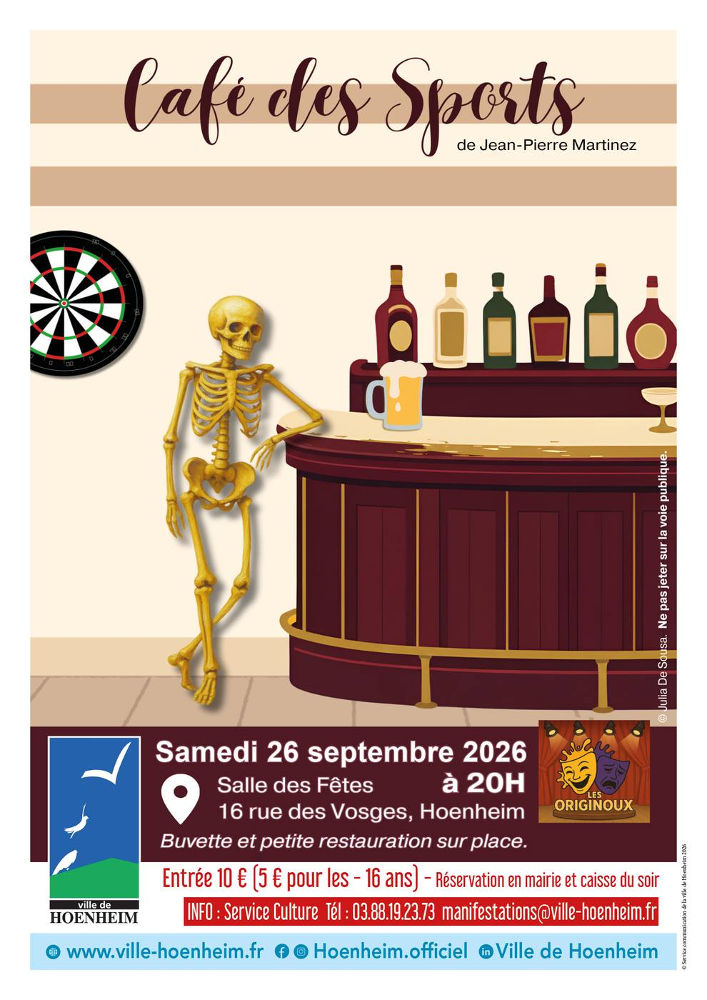

Théâtre : Café des Sports
26 septembre à 20 h 00 min - 22 h 00 min
Navigation de l'événement

Dans le cadre des rendez-vous musique et culture, la ville de Hoenheim vous propose une pièce de théâtre Café des Sports interprétée par la troupe de théâtre de Hoenheim Les Originoux le samedi 26 septembre à 20h00 à la salle des fêtes 16 rue des Vosges à Hoenheim.
Venez découvrir cette pièce écrite par Jean-Pierre Martinez et jouée par les Originoux.
Suite à un accident de corbillard, l’arrivée dans un café d’un cercueil qui s’avère contenir un billet de loto gagnant fournit le prétexte d’une comédie très enlevée.
Tarifs : 10€ / 5€ pour les – de 16 ans.
Buvette est petite restauration sur place.
Réservation en mairie et caisse du soir.
Service Animation, Culture et Protocole : Tél. 03 88 19 23 73 – manifestations@ville-hoenhiem.fr